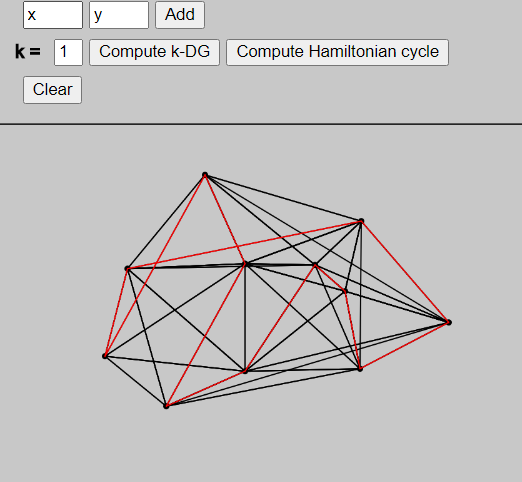

Firstly, the main topic should be defined. The k-Delaunay graph on a set of points has an edge between two vertices there exists a disk that contains these points and no more than k other points. That graph would be Hamiltonian if it contains an Hamiltonian cycle, a cycle that visits once and only once each vertex of the graph.
The tool is quite simple to use. The user may add points to the drawing area by clicking at the desired position or by entering coordinates in the input fields on the very top and then clicking on the "Add" button. Adding the points by coordinates allows to have more accuracy in the drawing. The user should just be aware that the coordinate system used is the same as in javascript : x growing from left to right and y from top to bottom. If the user tries to add a point outside of the drawing area (outside of the window or above the line), nothing will happen.
Once they are satified by the layout, the "Compute k-DG" button allows to display the k-Delaunay graph. They may choose the value of k in the input field on the left of the button. If the input is not valid, the default value is 0. Eventually the "Compute Hamiltonian cycle" button will display an hamiltonian cycle in the graph if there is one.
The "Clear" button will clear everything that has been drew.
As it was explain, a k-Delaunay graph has an edge between two points if there is a disk containing these two points and no more than k others. But there is another way to define it.
Indeed, the k-Delaunay triangles can be used. A triangle is said k-Delaunay if its circumcircle contains no more than k other points. Then, if an edge is an edge of a k-Delaunay triangle, it is also part of the k-Delaunay graph.
Knowing that, there is a simple algorithm to compute the graph. For every triple of points, we check whether there are more than k other points in the circumcircles. Since there are n choose 3 triangles, the running time of the algorithm is O(n4).
Once the graph is computed, the search for an hamiltonian cycle can be made. The implemented algorithm uses backtracking.
A recursive function takes the current path that is tried and check for every vertex if it can be added. A vertex is valid if it is not visited yet and if there is an edge between it and the last point of the path. If a vertex is safe to add, then it is added to the path and the function is called again. If it ends on an invalid path, the point is removed from the path. The worst case for this algorithm O(n!).
Even though the algorithms are described above, some points have been left out.
To compute the hamiltonian cycle, it is needed to know the number of vertex in the graph. This calculation is made at the end of the computation of the graph and takes O(n3), since for every edge we check in a list if the point is already counted. There are at most n2 egdes and the list has at most n points. Since the algorithm to compute the graph is O(n4), it does not add complexity.
Still to compute the cycle, the fisrt step was to find the adjacency matrix, so it is not necessary to search in all the edges an edge between two vertices. The computation of the matrix takes a O(n2) since every edge is taken in account and there is at most n2 edges.